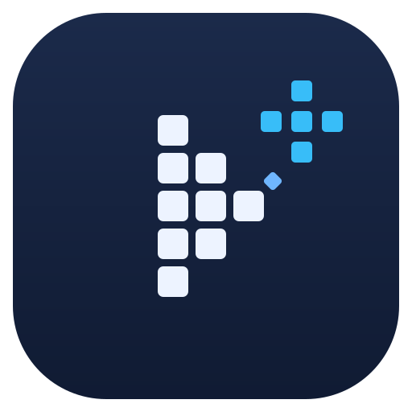

每张卡片：大图 220px 预览 + 浅色/深色背景下的 64 / 32 / 16px 效果（小尺寸即任务栏实际观感，棋盘格代表透明背景）。
选定后回复编号（例如「选 B」），我会生成完整 icon.ico / PNG 套件并接入构建、窗口与安装程序。
蓝→紫渐变圆角块，白色播放键 + 双星芒点缀。现代 AI 应用气质，小尺寸辨识度最高，最稳妥的一档。
对角线分割：左下粗糙像素格 → 右上明亮渐变，一个图标讲完「超分前后对比」的故事，最切题。
放大镜 + 播放键，透明底不锁形状。「放大 / 提升」含义最直白，一眼能懂，但同类应用用得多。
青→蓝渐变 + 四角外扩括号包住播放键，借「全屏放大」手势表达「放大看」，几何感强、干净利落。
浅底 + 蓝色宝石切面内嵌播放键，主打「清晰、焕新」的质感路线，六款里唯一浅色底，风格最独特。

深蓝底 + 8-bit 像素风播放键 + 像素星花。主打 ACG/动漫老片修复的复古趣味，与 Real-CUGAN 等动漫模型气质契合。